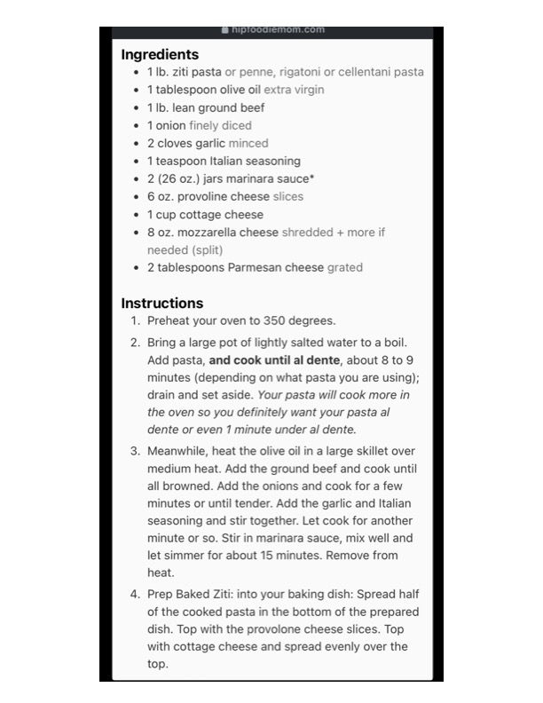

Dells ee

Original cookbook page 742
Ingredients
- 1 lb. ziti pasta or penne, rigatoni or cellentani
- 1 tablespoon olive oil extra virgin
- 1 lb. lean ground beef
- 1 onion finely diced
- 2 cloves garlic minced
- 1 teaspoon Italian seasoning
- 2 (26 oz.) jars marinara sauce*
- 6 oz. provoline cheese slices
- 1 cup cottage cheese
- 8 oz. mozzarella cheese shredded + more if
- needed (split)
- 2 tablespoons Parmesan cheese grated
Instructions
- Preheat your oven to 350 degrees.
- Bring a large pot of lightly salted water to a boil. Add pasta, and cook until al dente, about 8 to 9 minutes (depending on what pasta you are using); drain and set aside. Your pasta will cook more in the oven so you definitely want your pasta al dente or even 7 minute under al dente.
Recipe #742 from collection